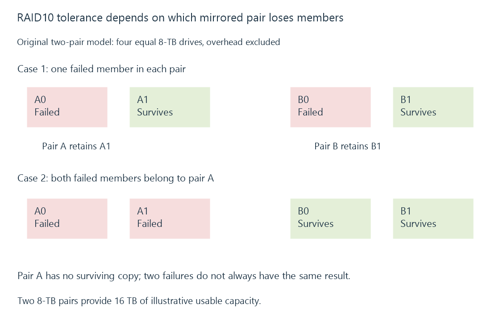

RAID: drive redundancy and failure boundaries
RAID combines drives in a layout that can provide particular failure tolerance, capacity and I/O behavior for a media server.
RAID organizes several drives into one storage arrangement. Depending on its layout, it can spread data, keep additional copies, or store reconstruction information. These choices affect usable capacity and which drive failures the array can survive.
For an Emby library, redundancy can keep media accessible after a drive fails. It does not preserve every earlier version of the files or move a recovery copy outside the server.
Capacity and failure tolerance belong to a layout
The following examples use four equal 8-TB drives and ignore metadata, spare space and implementation overhead.
| Layout | Illustrative usable capacity | Drive-failure boundary |
|---|---|---|
| RAID 0, striping | 32 TB | No drive redundancy |
| RAID 1, two-drive mirror | 8 TB for one pair | Either member of that pair can fail |
| RAID 5, four drives | 24 TB | One missing member can be reconstructed |
| RAID 6, four drives | 16 TB | Two missing members can be reconstructed |
| RAID 10, two mirrored pairs | 16 TB | At least one member must survive in each pair |
The RAID 1 row describes a pair rather than all four drives. RAID 10 can survive two failures when they occur in different pairs, but losing both members of one pair exceeds that arrangement's redundancy. “Two drives failed” is therefore incomplete evidence without their positions.

A degraded array has less protection
After a member fails, an array can continue using its remaining copies or parity. It is then degraded: the failure tolerance available before the failure has been partly or fully consumed.
Reconstruction reads surviving storage and writes replacement data. That competes with playback, scans and recording. A successful rebuild restores the layout's redundancy; until then, another failure or unreadable required region can prevent recovery.
A larger drive's nominal capacity does not by itself predict rebuild time. The layout, amount of data rebuilt, I/O rate, competing work and error handling all matter.
Redundancy follows current changes
An authorized deletion or unwanted overwrite changes the array's current logical contents. Mirroring faithfully preserves that current change on the other member. Ordinary RAID does not recognize it as an event that should be undone.
Media backups retain recoverable generations and can occupy another failure domain. Snapshots can retain earlier versions within their own scope. RAID supplies a different property: continued service or reconstruction under the stated device failures.
The implementation also matters. A controller array, Linux software RAID and a pooled file-system layout do not share every cache, integrity or recovery rule. Use the actual system's documented degraded and recovery states when interpreting an Emby storage outage.
See Also
- Parity protection and reconstruction
- Storage pooling and logical capacity
- Media backups and recoverable generations